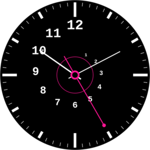
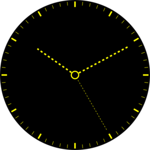
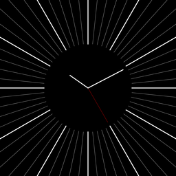
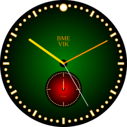
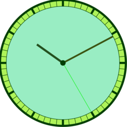

SVG óra galéria 2020
A 2020-as évfolyam · 2020.10.02.
A szorgalmi feladatként kiadott SVG órák szépségversenye.
Anderko Máté
Arany Péter
Arbel Dániel
Barta Dániel Zsolt
#04B82566
Baumstark József
#4CC9DC3E

Borbás Luca
Borbás Luca
Brandschott Benedek Marcell
Buzási Boglárka Anna
Csilling Bálint

#C60E97C2
#58F4E53C
Demeter Janka Csenge
#0E1D0DE1
#56A58F5E
Gallik Zoltán György
#8DB5B360
#B681409D
Gyenes Viktor
#9C1D1A8C

Horváth Botond Zsolt
Horváth Botond Zsolt
Horváth László
Jakab Martin

Jeges Gábor
#33D4E9FB
Kende Zoltán
Kis Benjámin
Kisteleki Dávid
#467E9570
#564F601D
#92AB7D66
Kőfaragó Nándor
#A55C4CE3
Korpai Tamás

Kostyál Bálint
#F3865ACB
Kovács Luca Ágota
#C36A36E6
Lehoczky Márk
#8CD2846F
Lovász Botond
#5B07EB51
Medgyesi Ádám

Mészáros László
Milbacher Boldizsár
Mohácsi Ákos
#9E445B0F
Musa Abdullah
#4994444D
Nemes Attila
Németh Bálint
Papp Inez Anna

Pfemeter Márton Géza
Pfemeter Márton Géza
#C9EA9498
#115EC89E
Rádai Ronald
Radnóti Zsuzsanna
Rátki Barnabás
Richly Bálint Gábor
#42A7A16A
Safár Gergő
Schmieder Nándor
#CB7FC37B
#C76C8BC7
Sisák Botond Bendegúz
#C9AFBA9A

Száraz Dániel
Szőcs Ákos
Szvétek-Müller András Zsolt

Tálos Martin
Tálos Martin
#C62B3112
Tóth Marcell József
#B4F8BA73
#3FB19E5B

Vakán Péter
Vakán Péter
#3E1EB071
Vass Annamária
Wirker Dávid Zoltán
Wohlfart Richárd